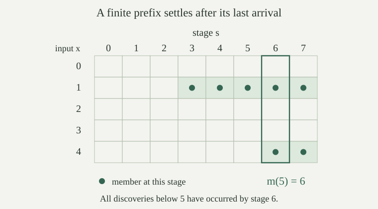

Use the fixed program numbering \(\varphi_e\), and write \(W_e=\{x:\varphi_e(x)\downarrow\}\). Let \(T(e,x,k)\) be the primitive-recursive successful-computation test. Define the finite stage of \(W_e\) at \(s\) by
Both cutoffs are part of the definition. The stage is a subset of \(\{0,\ldots,s-1\}\), and \(W_{e,0}=\varnothing\). To compute it, test the finitely many pairs \((x,k)\) with both coordinates below \(s\). A stage can add several members at once, and consecutive stages can be equal.
The zero-one test for \(x\in W_{e,s}\) is primitive recursive jointly in \(e,s,x\). For every \(e\),
The stage test combines \(x<s\) with a bounded existential test of the primitive-recursive relation \(T\). This gives joint primitive recursiveness, including when \(s=0\). Larger stages retain both inequalities, so every old successful pair remains available.
If \(x\in W_{e,s}\), a successful certificate gives \(\varphi_e(x)\downarrow\). Conversely, if \(x\in W_e\), some certificate \(k\) exists. At \(s=\max(x,k)+1\), both \(x\) and \(k\) are below \(s\), so \(x\in W_{e,s}\). Thus every member appears, although no stage is required to contain all members.
A computable finite approximation to \(A\subseteq\mathbb N\) consists of a total recursive bound \(c(s)\) and a total recursive zero-one test \(d(s,x)\). Put \(F_s=\{x:d(s,x)=1\}\), and require
The test is recursive jointly in its two arguments, using the fixed coding of pairs. Hence a program can list the whole finite stage by testing \(x<c(s)\). Each \(F_s\) lies in \(A\); once a number enters, it stays. The preceding construction supplies such data uniformly for every \(W_e\), with \(c(s)=s\). The certificate characterization also shows that the union of any such approximation is c.e., since membership means \(\exists s\,[d(s,x)=1]\).
Fix \(N\in\mathbb N\). Suppose the first \(N+1\) stages \(F_0,\ldots,F_N\) are empty. Do these observations alone imply that \(0\notin\bigcup_s F_s\), even if the approximation is computable and increasing?
No. Compare the two explicit approximations \(E_s=\varnothing\) for every \(s\), and
Both have the constant finite bound \(c(s)=1\), computable membership tests, and increasing stages. Their observed stages agree through \(N\), but their unions are respectively \(\varnothing\) and \(\{0\}\). This concerns what follows from the finite observations alone. Additional information about a particular approximation can of course certify that it will never add anything.
A strictly increasing enumeration of \(A\subseteq\mathbb N\) is a total function \(f:\mathbb N\to\mathbb N\) with range exactly \(A\) and \(f(n)<f(n+1)\) for every \(n\). A computable increasing enumeration additionally requires \(f\) to be total recursive. Such a range is infinite: different inputs have different outputs. The empty set and nonempty finite sets therefore have no strictly increasing enumeration with domain all of \(\mathbb N\).
For every strictly increasing \(f\), induction gives \(f(n)\ge n\): the starting value is nonnegative, and each step increases by at least one. This numerical bound will turn a range-membership question into a finite computation.
If \(f:\mathbb N\to\mathbb N\) is total recursive and strictly increasing, its range is decidable. More precisely,
A witness with \(n\le x\) certainly gives range membership. Conversely, \(f(n)=x\) and \(f(n)\ge n\) imply \(n\le x\). Compute the finite list \(f(0),\ldots,f(x)\) and compare each entry with \(x\). Every call terminates because \(f\) is total. Recursion through a prescribed finite number of calls, followed by the zero-one equality test, gives a total recursive characteristic function.
This argument does not decide membership in the range of an arbitrary total enumeration: without increasingness, a small value can first occur at an arbitrarily large input.
For an infinite \(A\subseteq\mathbb N\), \(A\) is decidable if and only if it has a computable strictly increasing enumeration.
One direction is . For the other, let a total recursive characteristic function decide \(A\), and define
An infinite subset of \(\mathbb N\) is unbounded, since a bounded subset is finite. Thus the initial search and every subsequent search have witnesses. Their predicates are total recursive, so least-witness search computes the minima. The successor operation \(y\mapsto\min\{x\in A:x>y\}\) is total recursive on every \(y\), and recursive closure under primitive recursion makes the displayed sequence total recursive.
The construction puts every value in \(A\) and increases strictly. It misses no member: inductively, every member of \(A\) at most \(f(n)\) occurs among \(f(0),\ldots,f(n)\). This holds initially by minimality. At the next step there is no member of \(A\) strictly between \(f(n)\) and its chosen successor, so the invariant persists. For \(x\in A\), the bound \(f(x)\ge x\) puts \(x\) in that finite initial range. Hence the range is exactly \(A\).
Let \((F_s)\) be a computable finite approximation to a nonempty set \(A\), and fix \(a_0\in A\). The following specified total recursive function has range exactly \(A\):
Decode the pair, run the supplied total stage-membership test, and return the indicated value. Pair decoding and selection between two total computed answers are recursive. Every output belongs to \(A\), because \(F_s\subseteq A\) and \(a_0\in A\). Every \(x\in A\) appears in some stage \(F_s\), and then the input \(\langle s,x\rangle\) outputs \(x\).
The stream can repeat numbers and need not increase. No assumption that a stage introduces at most one number is needed. The fixed choice of \(a_0\) describes a procedure for this nonempty set; it is not a test of whether a presented c.e. set is empty. The range characterization gives the same existence conclusion directly.
Every infinite c.e. set contains an infinite decidable subset.
More explicitly, let \(q\) be any total recursive function with infinite range \(A\). For each \(y\), define \(k(y)=\min\{j:q(j)>y\}\), put \(H(y)=q(k(y))\), and define
Then this specified \(r\) is total recursive and strictly increasing, and \(B=\operatorname{range}(r)\) is an infinite decidable subset of \(A\).
The infinite range of \(q\) is unbounded, so every search defining \(k(y)\) terminates. The test \(q(j)>y\) is total recursive jointly in \(y,j\); least-witness search therefore makes \(k\), and then \(H\), total recursive. Primitive recursion computes \(r\) using only these total procedures. Its recurrence gives \(r(n+1)>r(n)\), and every value is a value of \(q\).
Thus \(B\subseteq A\), strict increase makes \(B\) infinite, and decides membership in \(B\). For an infinite c.e. \(A=W_e\), and supply the required stream \(q\). These are algorithms built from the given stage test or stream; the termination assertions use infinitude. They do not turn the original semidecision procedure for \(A\) into a decision procedure for all of \(A\).
Some non-enumerable sets also contain infinite decidable subsets. For a productive set, iterating its escape rule first constructs an infinite c.e. subset, to which the present theorem applies.
Let \(q(0),\ldots,q(6)=4,1,4,7,2,7,9\), and let \(q(j)=j+3\) for \(j\ge7\). Use the recurrence in to find \(r(0),r(1),r(2)\). Which members of the range of \(q\) does the selected range omit?
The first value is \(r(0)=4\). The least index with output above \(4\) is \(3\), giving \(r(1)=7\). The least index with output above \(7\) is \(6\), giving \(r(2)=9\). Thereafter \(r(n)=n+7\) for \(n\ge2\), since \(q(7)=10,q(8)=11,\ldots\). Hence
The selected set omits exactly \(1\) and \(2\). Selection is by larger numerical values, rather than by taking every distinct arrival.
Fix a computable finite approximation \((F_s)\) to \(A\). A settling modulus is a total function \(m:\mathbb N\to\mathbb N\) such that
Thus every member below \(n\) has entered by stage \(m(n)\). Because the approximation is increasing and remains inside \(A\), the same agreement holds at every later stage. A computable settling modulus is one that is total recursive. The definition does not require \(m\) itself to increase. At \(n=0\), both prefixes are empty regardless of the stage chosen.
Every increasing finite approximation with union \(A\) has a settling modulus. If \(A\) is finite, some single stage contains all of \(A\), so a constant settling modulus exists.
For fixed \(n\), only finitely many \(x<n\) lie in \(A\). Each enters at some stage. The maximum of those finitely many stages, or zero if there are no such members, settles the prefix. Equivalently, define \(m_A(n)\) to be the least stage at which the displayed prefix equality holds. The preceding existence argument makes this a well-defined total function.
If \(A\) is finite, apply the same argument to all its members at once. Every later stage equals \(A\). Knowing that a maximum exists does not supply an effective way to locate it from an arbitrary enumeration: the argument selected the members of \(A\) before collecting their arrival stages.
For a concrete example, take \(F_s=\{1:3\le s\}\cup\{4:6\le s\}\), meaning that \(1\) enters at stage \(3\), \(4\) enters at stage \(6\), and nothing else enters. This is an increasing computable finite approximation to \(\{1,4\}\), with constant input bound \(5\). The least settling stages are \(m_A(n)=0\) for \(n\le1\), \(m_A(n)=3\) for \(2\le n\le4\), and \(m_A(n)=6\) for \(n\ge5\).

For any fixed computable finite approximation \((F_s)\) to \(A\), the set \(A\) is decidable if and only if this approximation has a computable settling modulus. No infinitude assumption is needed.
Given a computable modulus \(m\), decide \(x\in A\) by testing \(x\in F_{m(x+1)}\). The modulus settles all inputs below \(x+1\), including \(x\). The stage test and \(m\) are total recursive, so their composition is a total recursive characteristic function.
Conversely, suppose a total recursive characteristic function \(\chi_A\) decides \(A\). For \(n,s\), test the bounded condition
This is a total recursive test: compute the finitely many membership decisions and stage tests. Some stage passes, since all finitely many positive inputs below \(n\) eventually enter. Define \(m(n)\) as the least passing stage. Least-witness search is total here, so \(m\) is total recursive. Every member of \(A\) below \(n\) belongs to \(F_{m(n)}\), while \(F_{m(n)}\subseteq A\) gives the converse. Hence \(m\) is a settling modulus for this very approximation.
Could a total recursive function \(M(e,n)\) give a settling modulus \(n\mapsto M(e,n)\) for \(W_{e,s}\), simultaneously for every \(e\)? Does the existence of a constant modulus when \(W_e\) is finite provide such an algorithm?
No such \(M\) exists. If it did, the jointly computable test
would decide whether \(\varphi_e(x)\) halts, contradicting the undecidability of the halting relation. This is a uniform contradiction in \(e,x\), not a failure of the modulus for one particular finite set.
For a fixed finite \(W_e\), its elements and a final arrival stage can be built into separate programs, yielding a decider and a constant modulus. These are separately chosen existence witnesses for this fixed set; the hypothetical function \(M\) was required to work for every index. More generally, the constructive equivalence above converts a supplied decider into a modulus, or a supplied modulus into a decider; it does not provide either input from an arbitrary semidecision procedure.